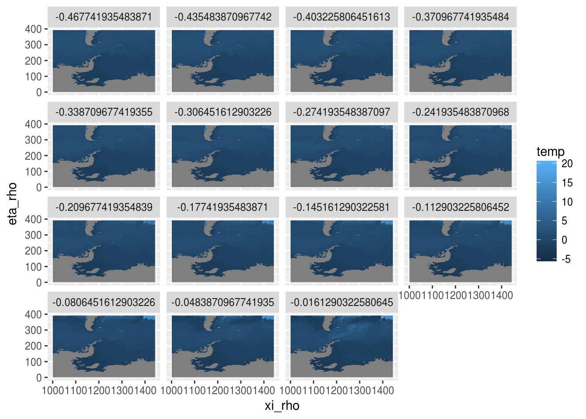
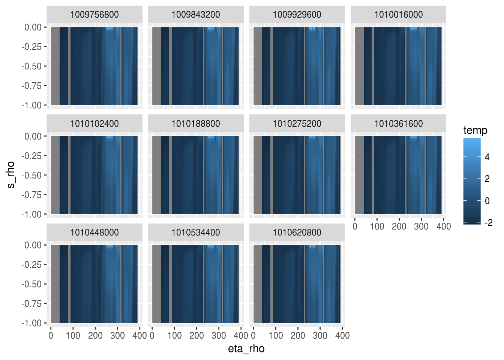

Find an arbitrary NetCDF file.
f <- file.path("/rdsi/PRIVATE/raad", "data/ftp.ifremer.fr/ifremer/cersat/products/gridded/psi-concentration/data/antarctic/daily/netcdf/2013/20130415.nc")NetCDF is a very widely use file format for storing array-based data as variables. The variable’s space is defined by its dimensions and their metadata. Dimensions are by definition “one-dimensional” consisting of one or more elements, a rectilinear virtual array with coordinate metadata on its units, type and interpretation. The space of a variable is defined as one or more of the dimensions in the file, but a variable won’t necessarily use all the available dimensions and no dimensions are mandatory or particularly special.
Some conventions exist to define usage and minimal standards for metadata for particular file schemas, but these are many, varied, and no particularly well adhered to in many contexts.
A NetCDF file is essentially a container for simple array based data structures. There is limited capacity in the formal API for accessing data randomly within a variable, the primary mechanism is to define offset and stride (start and count) hyperslab indexes. (I.e. it’s not possible to query a file for an arbitrary sparse set of values, without constructing a degenerate hyperslab query for each point or reading a hyperslab containing cells not in the set.)
Tidync provides facilities to explore the contents of a NetCDF file and construct efficient queries to extract arbitrary hyperslabs. These can be used directly in array contexts, or in “long form” database contexts.
On first contact with the file, the available variables are reported (the first is made “active”) and the dimensions of the active variable are described. The “active” variable may be specified with the activate function.
library(tidync)
tidync(f)## Variables: concentration, (quality_flag)
## Dimensions:
## # A tibble: 3 x 5
## variable_name .variable_ .dimension_ dimension_name dimension_length
## <chr> <dbl> <int> <chr> <int>
## 1 concentration 1 0 ni 632
## 2 concentration 1 1 nj 664
## 3 concentration 1 2 time 1## Variables: concentration, (quality_flag)
## Dimensions:
## # A tibble: 3 x 5
## variable_name .variable_ .dimension_ dimension_name dimension_length
## <chr> <dbl> <int> <chr> <int>
## 1 concentration 1 0 ni 632
## 2 concentration 1 1 nj 664
## 3 concentration 1 2 time 1The term “hyperslab” is sometimes used to mean an arbitrarily-dimensioned array, and tidync uses this pattern for its main functions.
The ‘hyper_filter’ function allows specification of expressions to subset a variable based on each dimension’s coordinate values.
If no expressions are included we are presented with a table containing a row for each dimension, its extent in coordinates and its length. For convenience we also assign the activate form to an R variable, though we could just chain the entire operation without this.
concentration <- tidync(f) %>% activate(concentration)
concentration %>% hyper_filter() ## [1] "filtered dimension summary: "
## # A tibble: 3 x 4
## name min max length
## <chr> <dbl> <dbl> <int>
## 1 ni 1 632 632
## 2 nj 1 664 664
## 3 time 993060 993060 1By specifying inequality expressions we see an implicit subsetting of the array. Everything so far is implicit to delay any file-based computation required to actually interact with the file and read from it.
Notice that these are “name = expr” paired expressions, because the right hand side may be quite general we need the left hand side name to be assured of the name of the dimension referred to.
concentration %>% hyper_filter(nj = nj < 20)## [1] "filtered dimension summary: "
## # A tibble: 3 x 4
## name min max length
## <chr> <dbl> <dbl> <int>
## 1 ni 1 632 632
## 2 nj 1 19 19
## 3 time 993060 993060 1We can also use the special internal variable ‘step’, which will test against position in the dimension elements ‘1:length’ rather than the values. It’s not different in this case because ni and nj are just position dimensions anyway. The special ‘dplyr’ adverbs like ‘between’ will work.
concentration %>% hyper_filter(ni = step < 20, nj = dplyr::between(step, 30, 100))## [1] "filtered dimension summary: "
## # A tibble: 3 x 4
## name min max length
## <chr> <dbl> <dbl> <int>
## 1 ni 1 19 19
## 2 nj 30 100 71
## 3 time 993060 993060 1How to use these idioms to extract actual data?
We can now exercise these variable choice and dimension filters to return actual data, either in by slicing out a “slab” in array-form, or as a data frame.
hf <- concentration %>% hyper_filter(ni = step < 20, nj = dplyr::between(step, 30, 100))
## as an array
arr <- hf %>% hyper_slice()
str(arr)## int [1:19, 1:71] NA NA NA NA NA NA NA NA NA NA ...## as a data frame
#concentration %>% hyper_tibble() %>% filter(!is.na(concentration))A ROMS file typically has many variables of large size. The geographic space is curvilinear, and so we can’t use the usual affine tricks available to us with “rasters”. But, ggplot2 has no problem taking our cell values with their multidimensional coordinate values, and plotting a raster from them in the grid space.
romsfile <- file.path("/rdsi/PRIVATE/raad","data_local/acecrc.org.au/ROMS/s_corney/cpolar/ocean_his_3307.nc")
format(file.info(romsfile)$size, sci = TRUE)## [1] "2.069521e+10"## this is a big file
tidync(romsfile)## Variables: AKs, (AKt, AKv, Akt_bak, Akv_bak, Cs_r, Cs_w, FSobc_in, FSobc_out, Falpha, Fbeta, Fgamma, Hsbl, M2nudg, M2obc_in, M2obc_out, M3nudg, M3obc_in, M3obc_out, Tcline, Tnudg, Tobc_in, Tobc_out, Vstretching, Vtransform, Znudg, Zob, Zos, angle, bustr, bvstr, dstart, dt, dtfast, el, f, gamma2, h, hc, lat_psi, lat_rho, lat_u, lat_v, lon_psi, lon_rho, lon_u, lon_v, mask_psi, mask_rho, mask_u, mask_v, nHIS, nRST, ndefHIS, ndtfast, nl_tnu2, nl_visc2, ntimes, pm, pn, rdrg, rdrg2, rho, rho0, salt, shflux, spherical, ssflux, sustr, svstr, swrad, temp, theta_b, theta_s, u, ubar, v, vbar, w, xl, zeta, zice)
## Dimensions:
## # A tibble: 4 x 5
## variable_name .variable_ .dimension_ dimension_name dimension_length
## <chr> <dbl> <int> <chr> <int>
## 1 AKs 0 3 xi_rho 1443
## 2 AKs 0 2 eta_rho 392
## 3 AKs 0 1 s_w 32
## 4 AKs 0 0 ocean_time 31## Variables: temp, (AKs, AKt, AKv, Akt_bak, Akv_bak, Cs_r, Cs_w, FSobc_in, FSobc_out, Falpha, Fbeta, Fgamma, Hsbl, M2nudg, M2obc_in, M2obc_out, M3nudg, M3obc_in, M3obc_out, Tcline, Tnudg, Tobc_in, Tobc_out, Vstretching, Vtransform, Znudg, Zob, Zos, angle, bustr, bvstr, dstart, dt, dtfast, el, f, gamma2, h, hc, lat_psi, lat_rho, lat_u, lat_v, lon_psi, lon_rho, lon_u, lon_v, mask_psi, mask_rho, mask_u, mask_v, nHIS, nRST, ndefHIS, ndtfast, nl_tnu2, nl_visc2, ntimes, pm, pn, rdrg, rdrg2, rho, rho0, salt, shflux, spherical, ssflux, sustr, svstr, swrad, theta_b, theta_s, u, ubar, v, vbar, w, xl, zeta, zice)
## Dimensions:
## # A tibble: 4 x 5
## variable_name .variable_ .dimension_ dimension_name dimension_length
## <chr> <dbl> <int> <chr> <int>
## 1 temp 74 3 xi_rho 1443
## 2 temp 74 2 eta_rho 392
## 3 temp 74 5 s_rho 31
## 4 temp 74 0 ocean_time 31tidync(romsfile) %>% hyper_filter()## [1] "filtered dimension summary: "
## # A tibble: 4 x 4
## name min max length
## <chr> <dbl> <dbl> <int>
## 1 xi_rho 1 1443 1443
## 2 eta_rho 1 392 392
## 3 s_w -1 0 32
## 4 ocean_time 1009756800 1012348800 31(tab <- tidync(romsfile) %>% activate(temp) %>%
hyper_tibble(xi_rho = step > 1000, s_rho = s_rho > -0.5, ocean_time = step == 1))## # A tibble: 2,604,840 x 5
## temp xi_rho eta_rho s_rho ocean_time
## <dbl> <dbl> <dbl> <dbl> <dbl>
## 1 NA 1001 1 -0.4677419 1009756800
## 2 NA 1002 1 -0.4677419 1009756800
## 3 NA 1003 1 -0.4677419 1009756800
## 4 NA 1004 1 -0.4677419 1009756800
## 5 NA 1005 1 -0.4677419 1009756800
## 6 NA 1006 1 -0.4677419 1009756800
## 7 NA 1007 1 -0.4677419 1009756800
## 8 NA 1008 1 -0.4677419 1009756800
## 9 NA 1009 1 -0.4677419 1009756800
## 10 NA 1010 1 -0.4677419 1009756800
## # ... with 2,604,830 more rowslibrary(ggplot2)
ggplot(tab, aes(xi_rho, eta_rho, fill = temp)) + geom_raster() + facet_wrap(~s_rho)
Now for a different orientation, this time with only one longitude slice. This example really needs to map on the actual geographic depth here, so it will need to be points or a mesh, or perform resampling on a grid.
(tab <- tidync(romsfile) %>% activate(temp) %>%
hyper_tibble(xi_rho = step == 1200, ocean_time = step < 12))## # A tibble: 133,672 x 5
## temp xi_rho eta_rho s_rho ocean_time
## <dbl> <dbl> <dbl> <dbl> <dbl>
## 1 NA 1200 1 -0.983871 1009756800
## 2 NA 1200 2 -0.983871 1009756800
## 3 NA 1200 3 -0.983871 1009756800
## 4 NA 1200 4 -0.983871 1009756800
## 5 NA 1200 5 -0.983871 1009756800
## 6 NA 1200 6 -0.983871 1009756800
## 7 NA 1200 7 -0.983871 1009756800
## 8 NA 1200 8 -0.983871 1009756800
## 9 NA 1200 9 -0.983871 1009756800
## 10 NA 1200 10 -0.983871 1009756800
## # ... with 133,662 more rowslibrary(ggplot2)
## model grid Y and model grid Z
ggplot(tab, aes(eta_rho, s_rho, fill = temp)) + geom_raster() + facet_wrap(~ocean_time) TBD: need some more real example data set. we can use these extractions for very efficient and flexible ways to build other objects. The tibble is fairly obviously directly ready for use in ggplot2, and with a little more work we could generate raster bricks. A major motivation for this work is to be able to extract data flexibly, and so not be bound by the geographic assumptions of the raster package - tidync can define and pull out any arbitrary slab from any NetCDF variable, no matter it’s dimensions or purpose. Initial experiments show that for many-slice extractions (10s or 100s) the tidync approach will also be faster than the current raster implementation.